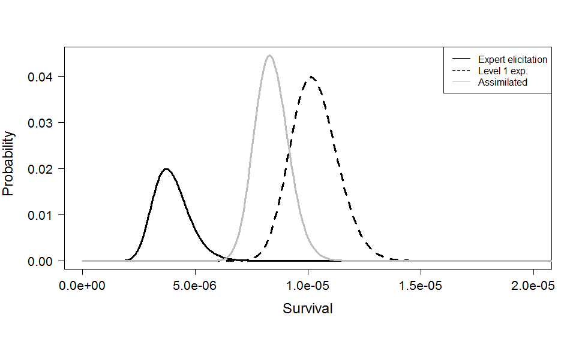

Chapter 11 Caveats and considerations
The approach illustrated in the two hypothetical examples is one approach that may be used to assimilate and incorporate information from varying monitoring designs and levels of study in the adaptive management process. This approach is easily used in a BDN framework as well as in scenario modeling, providing support to using the population model for scenario planning or decision support. As demonstrated in the example, attention needs to be applied to studies such that analyses can be assimilated. Specifically one needs to be able to combine information based off a distribution or predictive model. Additional consideration should be given to how much belief or weight is given each information source, if this approach is applied. For example, should data from mesocosm experiments receive similar or twice the weight of expert elicitations? What about in relation to field level studies and implementations? Assimilating and incorporating varying information sources that will arise from the AM plan will be a challenge requiring careful consideration as to how results will fit together with the population model to support for decision analysis and scenario planning.
11.1 Figures

Figure 1. Hypothetical Pallid Sturgeon embryo survival based on expert elicitation (black line), level 1 study (dotted line), and the assimilation of the two using Bayesian updating (grey line).